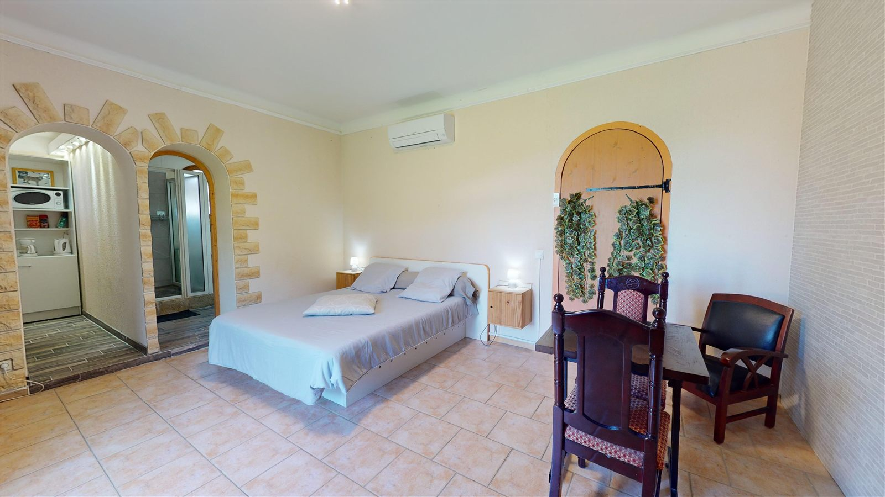
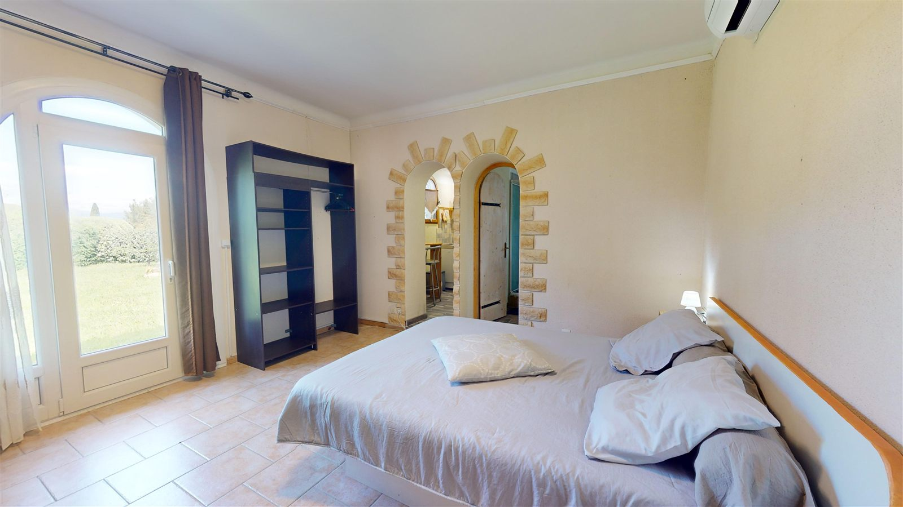
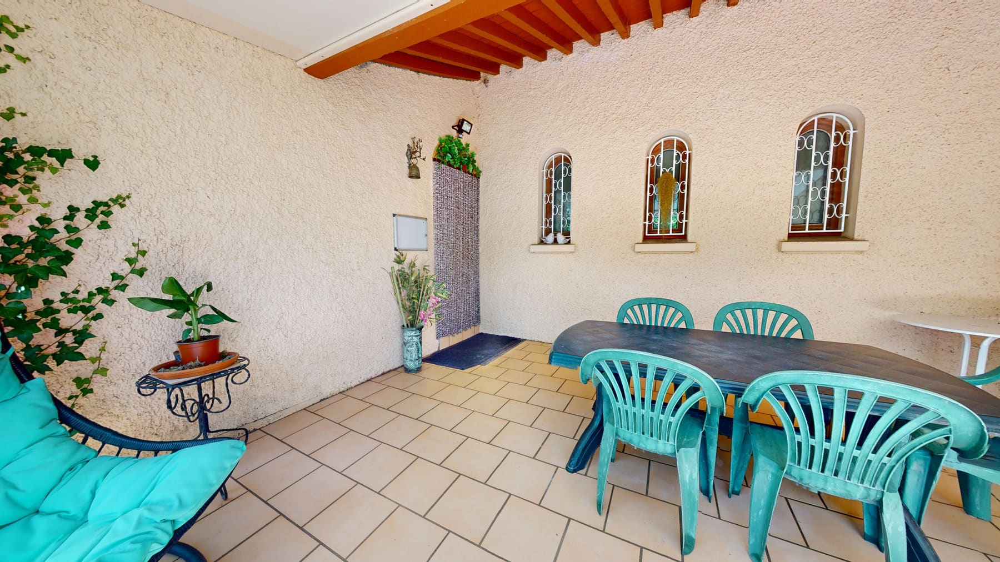

{kind=link}

Le Studio
Studio de plain-pied, lit double, coin cuisine équipé et salle d'eau. Climatisation, accès direct au jardin.
- Lit double
- Cuisine équipée
- Douche & WC
- Climatisation
- Wifi
Tarif sur demande
Demander les datesGîtes de charme · Vallespir · Pyrénées-Orientales
Trois gîtes au calme, avec jardin arboré et piscine, au cœur du Vallespir. Entre mer et montagne. Bienvenue chez Ninou.
Bienvenue
Nichée au bout d'une impasse tranquille des Cluses, aux portes de l'Espagne, notre maison aux jolies arches méditerranéennes abrite trois gîtes indépendants. Tous partagent un grand jardin arboré, une terrasse couverte avec vue sur les collines et une piscine pour les beaux jours.
Chaque gîte est climatisé, équipé d'un coin cuisine et d'une salle d'eau : vous êtes autonomes, comme à la maison. Idéal pour rayonner entre plages de la Côte Vermeille, villages catalans et sentiers de montagne.
— Ninou, votre hôte
Nos hébergements
Trois studios chaleureux pour deux personnes, tout équipés, autour du même jardin et de la piscine.

Studio de plain-pied, lit double, coin cuisine équipé et salle d'eau. Climatisation, accès direct au jardin.
Tarif sur demande
Demander les dates
Ambiance douce et lumineuse, lit double avec vue sur le jardin, cuisine équipée et climatisation.
Tarif sur demande
Demander les dates
Un cocon confortable ouvert sur la terrasse couverte et le jardin. Cuisine équipée et climatisation.
Tarif sur demande
Demander les datesEn images
Un aperçu des intérieurs, du jardin et de la terrasse. Cliquez pour agrandir.
À voir autour
Le massif du Canigó, les sentiers et rivières du Vallespir, les thermes d'Amélie-les-Bains et Le Boulou à quelques minutes. L'air pur et les grands espaces.
Céret et son art moderne, ses fameuses cerises, et les plages de la Côte Vermeille (Argelès, Collioure) à environ une demi-heure de route.
La frontière espagnole toute proche, les marchés, les vignobles et la gastronomie catalane. De quoi remplir chaque journée de découvertes.
Infos pratiques
Les petites choses utiles avant d'arriver. (Horaires et conditions à confirmer.)
Réservation & contact
Pour connaître les disponibilités et réserver le gîte qui vous plaît, contactez-nous directement. On vous répond avec plaisir.
Le formulaire prépare un e-mail dans votre messagerie : rien n'est envoyé sans votre accord.
{kind=link}
{kind=link}
{kind=link}
{kind=link}
{kind=link}